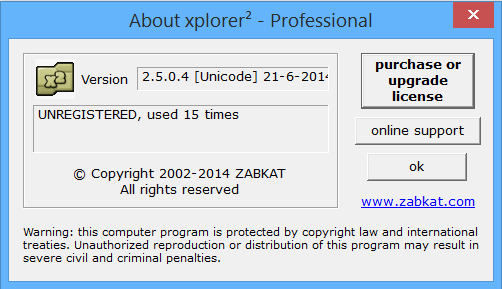

The cmd program (Command Prompt) can also react to several folders commands, but the pathname of the wanted folder are pasted into the cmd-window. This is done with the Unimacro Shorthand Command SCLIP.
One detail has to be set into the actions.ini config file, when you upgraded from an older version of Unimacro (before July 2020).
Say "edit actions"
Goto the section of [cmd] and set:
[cmd]
(...)
paste = SSK({ctrl+v})
This is needed because the cmd window wants "system keys", so the meta-action <<paste>> should be given with the Unimacro Shorthand Command SSK.
Top window behaviour
If you call for a folder outside a dialog window (a child window), all explorer (this computer) windows are inspected, and compared with the folder name that is asked for. The window with the nearest folder name (in the window title) is chosen. If no near match is present, a new "this computer" window is opened. If part of the folder name is present in the current active window, you switch to the exact folder, otherwise only the nearest folder window is brought to the front.
In order to force a new window, you can say new at the end of the folder command. In order to open an explorer window (with folder list on the left side) you can say explorer at the end of the folder command (or both new and explorer) (explorer does not work at the moment)
Example:
If you ask for folder projects (for example on d:/projects), but you have already a window open with d:/projects/sitegen/doctests, there are several possibilities:
You have this folder already active, in that case in this active window you switch to d:/projects, UNLESS there are other windows open with d:/projects/sitegen or d:/projects (closer matches). In those cases you jump to one of these windows.
The wanted folder is not yet active: you jump to this folder d:/projects/sitegen/doctests, and DO NOT change to d:/projects. With a second call to this folder the change is made.
No folder on the D:/ drive is open: a new folder window is opened.
You have a window with D:/ open. You switch to this window, and change to the desired folder.
child behaves like top
It can happen that you want to open a folder in top mode, while you have a child window in focus. You can configure this in .ini files, but the place has been changed (november 2010).
The configuring of this feature was in the section [general] of the _folders.ini configuration file. It has now been moved to the actions.ini configuration file.
You should remove the key
child behaves like top from the section [general] in your _folders.ini configuration file. (Call by the command edit folders).
File open strategy
The file you call it opened through the standard window function. So connecting to a program that is already open is decided by the windows settings. As additional word you can call open, edit, print, which will try to affect that window function. If the specifying mode is not valid, the (in most cases default) open mode is chosen.
There is one exception: if you call from a child window, the filename is printed in the filename control, like with folders. Note that this possibility will only rarely been needed.
If you call paste the file name is always printed on the place of the cursor.
On {letter} | {virtualdrivesspoken} trick
letter trick
I (Quintijn) have a lot of folders that are on my laptop, but also on my desktop computer, that I can reach by the drive letter "Q:". When I call a folder (or a file), followed by On Quebec, the corresponding folder on this Q: drive is opened.
Also when you make a copy of a folder to a USB-stick, carrying the name "E", you can call a folder (eg Documents, normally on "C:") with folder Documents On Echo.
virtualdrivesspoken trick
(December 2017): this trick is extended to virtualdrives.
Example: I have my documents on C:\Documenten, but older documents I moved to C:\DocumentenOud (meaning "Documents Old").
In the ini file I defined in virtualdrives (among others):
And I have all subfolders of documents (md) in the folders list. One of the folders is named "Quintijn".
[virtualdrivesspoken]
documentenoud = mdoud
Now when I call "folder Quintijn on documentenoud", the folder "C:\Documenten\Quintijn" is changed into "C:\DocumentenOud\Quintijn
Likewise, you can call a file on a "remote" letter-drive or virtualdrive.
Alternative file or folder names trick
When you have different paths for files or folders on different computers, but you want to keep the _folders.ini definitions consistent, you can specify alternatives in the file or folder name:
[folders]
Documents = (C|D):\Document(s|en)
In this case, Documents will point to C:\Documents, C:\Documenten, D:\Documents or D:\Documenten, the first exisiting folder is taken.
Sites trick
I (Quintijn) got on my computer a lot of folders after "D:/sites". Inside each of these folders there is an input and an output folder. With the special site commands I can reach these, with optional parameters like input, output, local. The natpython grammar automatically searches for these, or opens the local web site, after having found the output folder.
BUT: as long as the variable siteRoot in your python module file does not point to a valid folder, this part of the grammar is not activated.
2Xexplorer
Provisions were made to find folders in the 2XExplorer window as well. Currently I forgot about these, but they could be made active if somebody wants to use this feature.
2Xeplorer seemed to be perfect for speech recognition, but there is no CVS control. Also sometimes some windows functions seemed not to work correct. Not giving the right focus for example.
Xplorer2

On request this program is also inserted as possibility to open folders with. See www.zakbat.com
For configuration first insert in the [general] section of folders:
[general]
(...)
use other explorer = xplorer2
and insert in actions.ini (say edit actions):
[bringup xplorer2]
path = C:\Program Files\zabkat\xplorer2\xplorer2_UC.exe
name = xplorer2_uc
After these changes, the folder commands for "top windows" will work with xplorer2 instead of the standard explorer.
Drawback: automatic tracking of subfolders and files in a directory will not work. Also the recent folders list, as recently edit as option, will not respond on folders opened in xplorer2.
See short demo:
Tracing files and folders automatically
From release 3.9 it is possible to include all folders and/or all files from some directory in your folders or files list. The directories you want to use for this trick should be specified as a
virtual drives.
You can include these options by setting variables in this section [general] of the configuration file. If more items are to be specified, separate them by a ;. Example:
The mechanism works only on one level, so no recursiveness.
The virtual drives must be defined in the [virtualdrives] section.
Subfolders are excluded if they contain anything else than lowercase letters and spaces.
Files can be included by specifying the extensions, or excluded by specifying the fnmatch (unix) like patterns.
When you edit the configuration file (say edit folders), you can tune the spoken forms, and optionally specify more spoken forms for a folder or a file (separated by ;) or make the spoken form empty, the file of folder will be excluded from the grammars list.
Inspect the lists by saying show folders, or (more complete) by saying show all grammars.